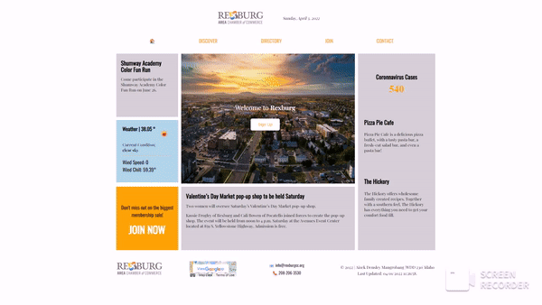

Web Design
This is one of the sites that I have reccently worked on. I created this project for the WDD 230 - Web Frontend Development clas of Brigham Young Univarsity-Idaho. The goal of this project is to create a Chamer of Commerce site for a local area. This project is to be created with HTML, CSS, and JavaScript.